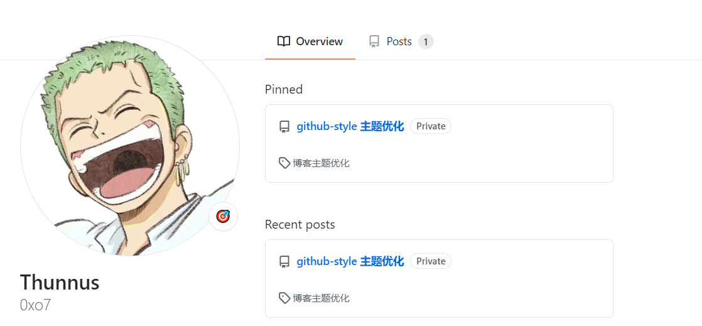

修改 footer.html 文件
原来的 footer.html 如下：
<div class="footer container-xl width-full p-responsive">
<div
class="position-relative d-flex flex-row-reverse flex-lg-row flex-wrap flex-lg-nowrap flex-justify-center flex-sm-items-center pt-6 pb-2 mt-6 f6 text-gray border-top border-gray-light"
>
<ul
class="list-style-none d-flex flex-wrap col-12 flex-justify-center mb-2 mb-lg-0"
>
{{ if .Site.Copyright }}
<li class="mr-3 mr-lg-0">{{ .Site.Copyright | safeHTML }}</li>
{{ end }}
</ul>
</div>
<div class="d-flex flex-justify-center pb-6">
<span class="f6 text-gray-light"></span>
</div>
</div>
修改后的如下：
<div class="footer container-xl width-full p-responsive">
<div
class="position-relative d-flex flex-row-reverse flex-lg-row flex-wrap flex-lg-nowrap flex-justify-center flex-lg-justify-between flex-sm-items-center pt-6 pb-2 mt-6 f6 text-gray border-top border-gray-light ">
<a aria-label="Homepage" title="GitHub" class="footer-octicon d-none d-lg-block mr-lg-4" href="{{ .Site.BaseURL }}">
<svg height="24" class="octicon octicon-mark-github" viewBox="0 0 16 16" version="1.1" width="24">
<path fill-rule="evenodd"
d="M8 0C3.58 0 0 3.58 0 8c0 3.54 2.29 6.53 5.47 7.59.4.07.55-.17.55-.38 0-.19-.01-.82-.01-1.49-2.01.37-2.53-.49-2.69-.94-.09-.23-.48-.94-.82-1.13-.28-.15-.68-.52-.01-.53.63-.01 1.08.58 1.23.82.72 1.21 1.87.87 2.33.66.07-.52.28-.87.51-1.07-1.78-.2-3.64-.89-3.64-3.95 0-.87.31-1.59.82-2.15-.08-.2-.36-1.02.08-2.12 0 0 .67-.21 2.2.82.64-.18 1.32-.27 2-.27.68 0 1.36.09 2 .27 1.53-1.04 2.2-.82 2.2-.82.44 1.1.16 1.92.08 2.12.51.56.82 1.27.82 2.15 0 3.07-1.87 3.75-3.65 3.95.29.25.54.73.54 1.48 0 1.07-.01 1.93-.01 2.2 0 .21.15.46.55.38A8.013 8.013 0 0016 8c0-4.42-3.58-8-8-8z">
</path>
</svg>
</a>
<ul class="list-style-none d-flex flex-wrap col-12 flex-justify-center flex-lg-justify-between mb-2 mb-lg-0">
{{ if .Site.Copyright }}
<li class="mr-3 mr-lg-0">{{ .Site.Copyright | safeHTML }}</li>
{{ else }}
<li class="mr-3 mr-lg-0">Theme by <a href='https://github.com/MeiK2333/github-style'>github-style</a></li>
{{ end }}
</ul>
</div>
<div class="d-flex flex-justify-center pb-6">
<span class="f6 text-gray-light"></span>
</div>
</div>
修改后左下角出现：
修改文章热力图
文章热力图需要在平板或者手机上实现左右滚动，修改如下：
修改overview.html，修改如下内容
<svg width="828" height="128" class="js-calendar-graph-svg">
<g transform="translate(10, 20)" id="graph-svg">
</g>
</svg>
为
<div class="heatmap-modify">
<svg width="828" height="128" class="js-calendar-graph-svg">
<g transform="translate(10, 20)" id="graph-svg">
</g>
</svg>
</div>
然后在 custom.scss 中添加如下内容：
.heatmap-modify {
width: 100%; /* 设置容器宽度 */
overflow: auto; /* 显示滚动条，根据内容决定是否显示 */
/* 隐藏默认的滚动条样式 */
scrollbar-width: none; /* Firefox */
-ms-overflow-style: none; /* IE and Edge */
}
.heatmap-modify::-webkit-scrollbar {
display: none; /* Chrome, Safari, and Opera */
}
除了上面的修改方式外，也可以把 overview.html 中的内容
<svg width="828" height="128" class="js-calendar-graph-svg">
<g transform="translate(10, 20)" id="graph-svg">
</g>
</svg>
修改为：
<div style="max-width: 100%; overflow-y: hidden; overflow-x: auto">
<svg width="828" height="128" class="js-calendar-graph-svg">
<g transform="translate(10, 20)" id="graph-svg">
</g>
</svg>
</div>
但是这个方法会出现进度条，可能会影响美观，而第一种方法隐藏了进度条
修改 TOC
将 toc.js 中的
function getToc() {
const hs = document.querySelector('.markdown-body').querySelectorAll('h1, h2, h3, h4, h5, h6');
const toc_list = document.querySelector("#toc-list");
for (const h of hs) {
const size = Number(h.tagName.toLowerCase().replace('h', ''));
const a = document.createElement('a');
a.classList.add("filter-item", "SelectMenu-item", "ws-normal", "wb-break-word", "line-clamp-2", "py-1", "toc-item");
a.href = `#${h.id}`;
a.innerText = h.innerHTML;
a.style.paddingLeft = `${size * 12}px`;
toc_list.appendChild(a);
}
}
修改为
function getToc() {
const hs = document.querySelector('.markdown-body').querySelectorAll('h1, h2, h3, h4, h5, h6');
const toc_list = document.querySelector("#toc-list");
for (const h of hs) {
const size = Number(h.tagName.toLowerCase().replace('h', ''));
const a = document.createElement('a');
a.classList.add("filter-item", "SelectMenu-item", "ws-normal", "wb-break-word", "line-clamp-2", "py-1", "toc-item");
a.href = `#${h.id}`;
a.innerText = h.innerText;;
a.style.paddingLeft = `${size * 12}px`;
toc_list.appendChild(a);
}
}
修改代码块中 Tab 的显示
当在配置文件中设置 pygmentsUseClasses = false 的时候，代码块显示是正常的，如下所示：
但是如果设置成 pygmentsUseClasses = ture 的时候，代码块显示如下所示：
这样有的时候，我们复制一些代码到代码块的时候，就会出现问题，所以我们需要 pygmentsUseClasses = ture 的时候，也是让一个Tab等于四个空格的距离
修改方式有两种，第一种是在 custom.css 中添加
pre code {
tab-size: 4; /* 这里将Tab设置为4个空格 */
}
第二种方法也是类似，在 custom.css 中添加
.markdown-body .highlight pre, .markdown-body pre{
tab-size: 4; /* 这里将Tab设置为4个空格 */
}
添加加密
在 post.html 的最前面添加如下内容：
{{- $password := .Params.password | default "" -}}
{{- if ne $password "" -}}
<script>
(function(){
var correctPassword = '{{ $password }}';
var storedPassword = localStorage.getItem('pagePassword');
function verifyPassword(password) {
return password === correctPassword;
}
function promptPassword() {
var userPassword = prompt('请输入文章密码');
if (verifyPassword(userPassword)) {
localStorage.setItem('pagePassword', userPassword);
} else {
alert('密码错误！');
if (history.length === 1) {
window.opener = null;
window.open('', '_self');
window.close();
} else {
history.back();
}
}
}
if (!verifyPassword(storedPassword)) {
promptPassword();
}
})();
</script>
{{- end -}}
添加加密后的显示private和public

参考github网站里面F12前端进行修改
修改 overview.html 文件，如下：
把
<a class="text-bold flex-auto min-width-0" href="{{ .Permalink }}">
<span class="repo" title="{{ .Title }}">{{ .Title }}</span>
</a>
修改为
<a class="text-bold flex-auto min-width-0" href="{{ .Permalink }}">
<span class="repo" title="{{ .Title }}">{{ .Title }}
{{ if .Params.password }}
<span class="Label Label--secondary v-align-middle ml-1 mb-1">Private</span>
{{ else }}
<span class="Label Label--secondary v-align-middle ml-1 mb-1">Public</span>
{{ end }}
</span>
</a>
同理把106行的
<a class="text-bold flex-auto min-width-0" href="{{ .Permalink }}">
<span class="repo" title="{{ .Title }}">{{ .Title }}</span>
</a>
也修改成
<a class="text-bold flex-auto min-width-0" href="{{ .Permalink }}">
<span class="repo" title="{{ .Title }}">{{ .Title }}
{{ if .Params.password }}
<span class="Label Label--secondary v-align-middle ml-1 mb-1">Private</span>
{{ else }}
<span class="Label Label--secondary v-align-middle ml-1 mb-1">Public</span>
{{ end }}
</span>
</a>
修改 posts.html 文件，把
<div class="d-inline-block mb-1">
<h3 class="wb-break-all">
<a href="{{ .Permalink }}">{{ .Title }}</a>
</h3>
</div>
修改为
<div class="d-inline-block mb-1">
<h3 class="wb-break-all">
<a href="{{ .Permalink }}">{{ .Title }}</a>
{{ if .Params.password }}
<span class="Label Label--secondary v-align-middle ml-1 mb-1">Private</span>
{{ else }}
<span class="Label Label--secondary v-align-middle ml-1 mb-1">Public</span>
{{ end }}
</h3>
</div>
文章图片居中
在 custom.css 中添加如下内容：
.markdown-body img {
display: block;
margin-left: auto;
margin-right: auto;
}
允许文章内单词等英文换行
正常显示如下：
在 custom.css 中添加如下：
.markdown-body {
word-break: break-all !important;
}
添加后，如下：
修改手机显示下的标签位置
在 custom.css 中添加
@media (max-width: 768px){
.pt-0 {
padding-top: 8px !important;
}
}
修改手机显示模式下的标签
在 custom.css 中添加
.text-mono {
white-space: nowrap;
}
.file-actions{
white-space: nowrap;
}
.file-header > *:not(#toc-toggle){
width: 100%; /* 设置容器宽度 */
overflow: auto; /* 显示滚动条，根据内容决定是否显示 */
/* 隐藏默认的滚动条样式 */
scrollbar-width: none; /* Firefox */
-ms-overflow-style: none; /* IE and Edge */
}
.file-header > *:not(#toc-toggle)::-webkit-scrollbar {
display: none; /* Chrome, Safari, and Opera */
}
或者
.text-mono {
white-space: nowrap;
}
.file-actions{
white-space: nowrap;
}
@media (max-width: 768px){
.file-header{
width: 100%; /* 设置容器宽度 */
overflow: auto; /* 显示滚动条，根据内容决定是否显示 */
/* 隐藏默认的滚动条样式 */
scrollbar-width: none; /* Firefox */
-ms-overflow-style: none; /* IE and Edge */
}
.file-header::-webkit-scrollbar {
display: none; /* Chrome, Safari, and Opera */
}
}
修改 readme.md
修改 overview.html 文件中的下面代码
<div class="d-flex flex-justify-between">
<div class="text-mono text-small mb-3">
<svg class="octicon octicon-octoface" viewBox="0 0 16 16" version="1.1" width="16" height="16">
<path fill-rule="evenodd"
d="M1.326 1.973a1.2 1.2 0 011.49-.832c.387.112.977.307 1.575.602.586.291 1.243.71 1.7 1.296.022.027.042.056.061.084A13.22 13.22 0 018 3c.67 0 1.289.037 1.861.108l.051-.07c.457-.586 1.114-1.004 1.7-1.295a9.654 9.654 0 011.576-.602 1.2 1.2 0 011.49.832c.14.493.356 1.347.479 2.29.079.604.123 1.28.07 1.936.541.977.773 2.11.773 3.301C16 13 14.5 15 8 15s-8-2-8-5.5c0-1.034.238-2.128.795-3.117-.08-.712-.034-1.46.052-2.12.122-.943.34-1.797.479-2.29zM8 13.065c6 0 6.5-2 6-4.27C13.363 5.905 11.25 5 8 5s-5.363.904-6 3.796c-.5 2.27 0 4.27 6 4.27z">
</path>
<path
d="M4 8a1 1 0 012 0v1a1 1 0 01-2 0V8zm2.078 2.492c-.083-.264.146-.492.422-.492h3c.276 0 .505.228.422.492C9.67 11.304 8.834 12 8 12c-.834 0-1.669-.696-1.922-1.508zM10 8a1 1 0 112 0v1a1 1 0 11-2 0V8z">
</path>
</svg>
README<span class="text-gray-light">.md</span>
</div>
</div>
删除
<svg class="octicon octicon-octoface" viewBox="0 0 16 16" version="1.1" width="16" height="16">
<path fill-rule="evenodd"
d="M1.326 1.973a1.2 1.2 0 011.49-.832c.387.112.977.307 1.575.602.586.291 1.243.71 1.7 1.296.022.027.042.056.061.084A13.22 13.22 0 018 3c.67 0 1.289.037 1.861.108l.051-.07c.457-.586 1.114-1.004 1.7-1.295a9.654 9.654 0 011.576-.602 1.2 1.2 0 011.49.832c.14.493.356 1.347.479 2.29.079.604.123 1.28.07 1.936.541.977.773 2.11.773 3.301C16 13 14.5 15 8 15s-8-2-8-5.5c0-1.034.238-2.128.795-3.117-.08-.712-.034-1.46.052-2.12.122-.943.34-1.797.479-2.29zM8 13.065c6 0 6.5-2 6-4.27C13.363 5.905 11.25 5 8 5s-5.363.904-6 3.796c-.5 2.27 0 4.27 6 4.27z">
</path>
<path
d="M4 8a1 1 0 012 0v1a1 1 0 01-2 0V8zm2.078 2.492c-.083-.264.146-.492.422-.492h3c.276 0 .505.228.422.492C9.67 11.304 8.834 12 8 12c-.834 0-1.669-.696-1.922-1.508zM10 8a1 1 0 112 0v1a1 1 0 11-2 0V8z">
</path>
</svg>
让markdown能够渲染html语法
在 config.toml 中加入
[markup.goldmark.renderer]
unsafe = true
这样，就能够在 readme.html 中渲染 html 语法
修改显示，添加 ::
在 overview.html 中添加
下面的代码参考 github，是 F12 扒的 github 前端源码
<div>
<input type="hidden" name="pinned_items_id_and_type[]" id="pinned-item-reorder-700239949" value="700239949-Repository" autocomplete="off" class="form-control">
<span role="button" class="pinned-item-handle js-pinned-item-reorder" aria-label="Drag to reorder">
<svg aria-hidden="true" height="16" viewBox="0 0 16 16" version="1.1" width="16" data-view-component="true" class="octicon octicon-grabber">
<path d="M10 13a1 1 0 1 1 0-2 1 1 0 0 1 0 2Zm0-4a1 1 0 1 1 0-2 1 1 0 0 1 0 2Zm-4 4a1 1 0 1 1 0-2 1 1 0 0 1 0 2Zm5-9a1 1 0 1 1-2 0 1 1 0 0 1 2 0ZM7 8a1 1 0 1 1-2 0 1 1 0 0 1 2 0ZM6 5a1 1 0 1 1 0-2 1 1 0 0 1 0 2Z"></path>
</svg>
</span>
<button data-direction="up" type="button" data-view-component="true" class="show-on-focus sortable-button js-sortable-button Button--secondary Button--small Button right-0">
<span class="Button-content">
<span class="Button-label">
<svg aria-label="Move rayder-dev up" role="img" height="16" viewBox="0 0 16 16" version="1.1" width="16" data-view-component="true" class="octicon octicon-chevron-up">
<path d="M3.22 10.53a.749.749 0 0 1 0-1.06l4.25-4.25a.749.749 0 0 1 1.06 0l4.25 4.25a.749.749 0 1 1-1.06 1.06L8 6.811 4.28 10.53a.749.749 0 0 1-1.06 0Z"></path>
</svg>
</span>
</span>
</button>
<button data-direction="down" type="button" data-view-component="true" class="show-on-focus sortable-button js-sortable-button Button--secondary Button--small Button right-0">
<span class="Button-content">
<span class="Button-label">
<svg aria-label="Move rayder-dev down" role="img" height="16" viewBox="0 0 16 16" version="1.1" width="16" data-view-component="true" class="octicon octicon-chevron-down">
<path d="M12.78 5.22a.749.749 0 0 1 0 1.06l-4.25 4.25a.749.749 0 0 1-1.06 0L3.22 6.28a.749.749 0 1 1 1.06-1.06L8 8.939l3.72-3.719a.749.749 0 0 1 1.06 0Z"></path>
</svg>
</span>
</span>
</button>
</div>
通过js修改图片插入方式
在 post.html 文件中，引入 initimage.js，如下所示：

然后在 static/js 里面添加 initimage.js，其内容如下所示：
function initImage() {
console.log("load initImage.js");
// 获取所有 img 元素
const images = document.querySelectorAll('img');
images.forEach((item) => {
// 处理 src 属性
let src = item.getAttribute('src');
if (src) {
let imageName = src.match(/image-\d+\.(png|jpg|jpeg|gif)/i); // 提取文件名
if (imageName) {
item.setAttribute('src', imageName[0]);
}
}
});
}
// 使用 DOMContentLoaded 事件
document.addEventListener('DOMContentLoaded', () => {
initImage();
});
添加后在 md 里面插入文件的时候语法如下：

修改p标签的边距

有的时候编辑文章会出现上面的问题，图片和文字边距过窄，直接为 p 标签添加 上边距
在 static/custom.css 中添加如下内容即可
.markdown-body blockquote, .markdown-body details, .markdown-body dl, .markdown-body ol, .markdown-body p, .markdown-body pre, .markdown-body table, .markdown-body ul{
margin-top: 16px !important;
}
修改标签的显示样式
修改 partials\overview.html 里面的代码，把

<p class="mb-0 f6 text-gray">
{{ with .Params.tags }}
{{ range $tag := (first 5 .) }}
<a href="{{ relURL (print "/tags/" . | urlize) }}" class="pinned-item-meta muted-link ">
<svg class="octicon octicon-tag" viewBox="0 0 16 16" version="1.1" width="16" height="16">
<path fill-rule="evenodd"
d="M2.5 7.775V2.75a.25.25 0 01.25-.25h5.025a.25.25 0 01.177.073l6.25 6.25a.25.25 0 010 .354l-5.025 5.025a.25.25 0 01-.354 0l-6.25-6.25a.25.25 0 01-.073-.177zm-1.5 0V2.75C1 1.784 1.784 1 2.75 1h5.025c.464 0 .91.184 1.238.513l6.25 6.25a1.75 1.75 0 010 2.474l-5.026 5.026a1.75 1.75 0 01-2.474 0l-6.25-6.25A1.75 1.75 0 011 7.775zM6 5a1 1 0 100 2 1 1 0 000-2z">
</path>
</svg>
{{ $tag }}
</a>
{{ end }}
{{ end }}
</p>
修改成

<p class="mb-0 f6 text-gray">
{{ with .Params.tags }}
{{ range $tag := (first 5 .) }}
{{ $hash := md5 $tag }} <!-- 生成标签名称的哈希值 -->
{{ $r := (mod (index $hash 0) 256) }} <!-- 取哈希值的第1字节作为红色 -->
{{ $g := (mod (index $hash 1) 256) }} <!-- 取哈希值的第2字节作为绿色 -->
{{ $b := (mod (index $hash 2) 256) }} <!-- 取哈希值的第3字节作为蓝色 -->
<!-- 确保色值不会过暗，避免使用过黑的颜色 -->
{{ if lt $r 100 }} {{ $r = add $r 100 }} {{ end }}
{{ if lt $g 100 }} {{ $g = add $g 100 }} {{ end }}
{{ if lt $b 100 }} {{ $b = add $b 100 }} {{ end }}
{{ $color := (printf "#%02x%02x%02x" $r $g $b) }} <!-- 合并成RGB颜色 -->
<a href="{{ relURL (print "/tags/" $tag | urlize) }}" class="pinned-item-meta muted-link">
<span class="repo-language-color" style="background-color: {{ $color }}"></span>
{{ $tag }}
</a>
{{ end }}
{{ end }}
</p>
修改完成后，效果如下：

这样相同的标签颜色是完全一样的
当然，我们还要修改 partials\overview.html 里面的如下代码：

操作和上面是一模一样的
注意，除了上面的标签颜色代码外，也可以预定义标签的颜色，代码如下，但是这样无法做到相同的标签颜色一定是一致的，这里并没有采用该方案：
<p class="mb-0 f6 text-gray">
{{ with .Params.tags }}
{{ $colors := slice "#e34c26" "#1f77b4" "#2ca02c" "#d62728" "#9467bd" "#8c564b" "#e377c2" "#7f7f7f" "#bcbd22" "#17becf" }}
{{ range $index, $tag := (first 5 .) }}
<a href="{{ relURL (print "/tags/" $tag | urlize) }}" class="pinned-item-meta muted-link">
<span class="repo-language-color" style="background-color: {{ index $colors (mod $index (len $colors)) }}"></span>
{{ $tag }}
</a>
{{ end }}
{{ end }}
</p>
除了修改 partials\overview.html 文件外，还要修改 partials\posts.html ，修改后的内容如下：

还要修改 partials\tags.html ，修改后如下：

注意，这里貌似会有一个小问题，为啥 Docker Compose 的标签颜色不一样呢 ？这是因为 Docker Compose 的标签显示成了 docker-compose，而颜色是根据标签名称的hash值计算的，这里的名称都不一样了，所以颜色才会不同，这个其实不影响，后面有时间再修复。

最后还要再修改 partials\post.html 文件，修改后如下：

修改和简单美化H1标签
在 custom.css 中添加：
.markdown-body h1 {
font-size: 30px;
border-bottom: 1px solid #34475242;
}
让标签横向排列

custom.css 中添加：
.external-link-wrapper {
display: flex;
gap: .6rem;
flex-wrap: wrap;
}
修改博客全局字体
custom.css 中添加：
/* 设置博客中的所有字体 */
@font-face {
font-family: 'BlogFont';
src: url('/font/HarmonyOS_Sans_Regular.woff2') format('woff2');
}
body{
font-family: BlogFont !important;
}
code, pre, tt{
font-family: BlogFont !important;
}
.markdown-body{
font-family: BlogFont !important;
}
.markdown-body .highlight pre, .markdown-body pre{
background: #f5f5f5 !important;
}
修改 H1、H2、H3 标题美化
custom.css 中添加：
/* 定义 H₁ 伪元素的高亮动画 */
@keyframes highlight-before {
0% {
color: #ffffff; /* 变亮 */
text-shadow: 0 0 10px rgba(255, 255, 255, 0.8);
}
100% {
color: inherit; /* 恢复默认颜色 */
text-shadow: none;
}
}
/* 限制只对 #file-pytest 里的 h1 生效 */
#file-pytest h1 {
transition: transform 0.3s ease, color 0.3s ease;
}
/* 只针对 #file-pytest 下的 h1::before */
#file-pytest h1::before {
color: #cfcfcf;
margin-left: -1.55rem;
font-size: 1.3rem;
margin-top: -0.23rem;
content: 'H₁';
transition: color 0.3s ease, text-shadow 0.3s ease;
margin-right: 0.5rem;
}
/* 鼠标悬停时，仅 #file-pytest 里的 h1 右移，同时 H₁ 高亮 */
#file-pytest h1:hover {
transform: translateX(10px); /* 向右移动 10px */
}
#file-pytest h1:hover::before {
animation: highlight-before 0.5s ease;
}
.markdown-body h1, .markdown-body h2 {
padding-bottom: .7em !important;
}
美化后的效果如下：

同理对 h2、h3 标题美化
/* 定义 H₂ 伪元素的高亮动画 */
/* 限制只对 #file-pytest 里的 h2 生效 */
#file-pytest h2 {
transition: transform 0.3s ease, color 0.3s ease;
}
/* 只针对 #file-pytest 下的 h1::before */
#file-pytest h2::before {
color: #cfcfcf;
margin-left: -1.55rem;
font-size: 1.3rem;
margin-top: -0.23rem;
content: 'H₂';
transition: color 0.3s ease, text-shadow 0.3s ease;
margin-right: 0.5rem;
}
/* 鼠标悬停时，仅 #file-pytest 里的 h1 右移，同时 H₁ 高亮 */
#file-pytest h2:hover {
transform: translateX(10px); /* 向右移动 10px */
}
#file-pytest h2:hover::before {
animation: highlight-before 0.5s ease;
}
/* 定义 H₃ 伪元素的高亮动画 */
/* 限制只对 #file-pytest 里的 h3 生效 */
#file-pytest h3 {
transition: transform 0.3s ease, color 0.3s ease;
}
/* 只针对 #file-pytest 下的 h1::before */
#file-pytest h3::before {
color: #cfcfcf;
margin-left: -1.55rem;
font-size: 1.3rem;
margin-top: -0.23rem;
content: 'H₃';
transition: color 0.3s ease, text-shadow 0.3s ease;
margin-right: 0.5rem;
}
/* 鼠标悬停时，仅 #file-pytest 里的 h1 右移，同时 H₁ 高亮 */
#file-pytest h3:hover {
transform: translateX(10px); /* 向右移动 10px */
}
#file-pytest h3:hover::before {
animation: highlight-before 0.5s ease;
}
上面的代码，都是 H₁、H₂、H₃亮一下，然后就灭掉了，如果鼠标移动上去的时候，显示一直亮，可以如下：
注意：下面的代码仅供参考，实际美化并没有使用下面的代码
/* 只对 #file-pytest 里的 h1 生效 */
#file-pytest h1 {
transition: transform 0.3s ease, color 0.3s ease;
}
/* 只针对 #file-pytest 下的 h1::before */
#file-pytest h1::before {
color: #eaeaea; /* 默认的灰色 */
margin-left: -1.55rem;
font-size: 1.3rem;
margin-top: -0.23rem;
content: 'H₁';
transition: color 0.3s ease, text-shadow 0.3s ease;
}
/* 鼠标悬停时，h1 整体右移 */
#file-pytest h1:hover {
transform: translateX(10px); /* 向右移动 10px */
}
/* 鼠标悬停时，H₁ 继承 h1 的颜色并加发光 */
#file-pytest h1:hover::before {
color: inherit; /* 继承 h1 的颜色 */
text-shadow: 0 0 10px rgba(255, 255, 255, 0.8); /* 发光效果 */
}
美化文章内图片
custom.css 中添加：
/* 美化文章内图片 */
#file-pytest .markdown-body img {
border: 1px dashed #a9a4a4;
}
美化代码块颜色
博客主题为亮色的时候 data-color-mode = light

custom.css 中添加：
/* 美化当主题为亮色的时候，代码块背景颜色 */
[data-color-mode="light"] .markdown-body .highlight pre,
[data-color-mode="light"] .markdown-body pre {
background: #f5f5f5 !important;
}
美化引用
测试测试测试测试测试测试测试测试测试测试测试测试测试测试测试测试测试测试测试测试测试测试测试测试测试测试测试测试测试测试测试测试测试测试测试测试测试测试测试测试测试测试测试测试测试测试测试测试测试测试测试测试测试测试测试测试测试测试测试测试测试测试测试测试测试测试测试测试测试测试测试测试测试测试测试测试测试测试测试测试测试测试测试
美化亮色主题下的引用，custom.css 中添加：
/* 美化引用 */
[data-color-mode="light"] .markdown-body blockquote {
margin: 2px 0;
padding: 10px 20px;
position: relative;
color: rgba(52, 73, 94, .8);
background-color: rgba(22, 152, 43, 5%);
border-left: 3px solid rgba(22, 152, 43, .3);
box-shadow: 1px 1px 2px rgba(0, 0, 0, .125);
}
.markdown-body blockquote p {
margin-top: 0 !important;
}
引入 pangu.js
在 Blog\static\js 中引入 pangu.js 文件
在 baseof.html 中添加如下：

美化 测试
暂未美化
调整 H1 标题之间的间距
在 custom.css 中添加
.markdown-body h1:not(:first-of-type) {
margin-top: 48px !important;
}

提高图片清晰度
在 Blog\themes\github-style-plus\layouts\_default 下创建 _markup 文件夹，然后在文件夹里面再次创建 render-image.html，内容如下：
<img
src="{{ .Destination | safeURL }}"
alt="{{ .Text }}"
{{ with .Title }}title="{{ . }}"{{ end }}
class="custom-image-class"
srcset="{{ .Destination | safeURL }} 1.25x"
/>
<script>
function improveImage() {
// console.log("load improveImage.js");
// 获取所有 srcset 元素
const images = document.querySelectorAll('img');
images.forEach((item) => {
// 处理 srcset 属性
let srcset = item.getAttribute('srcset');
if (srcset) {
let imageName = srcset.match(/image-(\d+\.(png|jpg|jpeg|gif))\s(\d+(\.\d+)?x)/i); // 提取文件名和1.25x
if (imageName) {
item.setAttribute('srcset', imageName[0]);
}
}
});
}
// 使用 DOMContentLoaded 事件
document.addEventListener('DOMContentLoaded', () => {
improveImage();
});
</script>